A running record of rebuilding the Hyundai Ioniq 5 front end and redesigning its dashboard in Blender, one piece at a time. The goal is a first-person view that feels like sitting in the car, so looking left or right while recording never breaks the illusion.
Progress
Turn signal and start/stop handles, then the front left door
Turn signal and start/stop handles
Set aside. I tried extruding different faces from the housing behind the steering wheel to form the turn signal stalk and the start/stop control. I didn't like how it looked, so I removed it. I'll come back to these later, when I work on the back end.
Front left door
In progress. The door started as a cube and is now a thin panel. Next steps:
Split the panel in half with a horizontal loop cut (Ctrl + R).
Extrude the lower half to form the armrest area and the storage pocket at the bottom of the door.
Up next
Rear view mirror.
Roof, at least enough to frame the view.
The goal is enough surrounding geometry that the camera can pan left and right without exposing empty space.
Gathering reference images
In progress. Collecting references to guide the door and the roof:
Open front door: reference images of the Ioniq 5 door with it open, to check the armrest and lower storage pocket shapes against my panel.
Rear view mirror: how it looks and how far back it sits from the top of the windshield.
The mirror's position will tell me how much roof I need to build. Only the part of the roof that can be seen from the driver's view needs geometry.
Windshield glass panel
In progress. The windshield is a single plane with a Solidify modifier (Simple mode, 4 mm thickness, offset -1, rim fill on). It is tilted about 24 degrees on the Y axis and sits in the dark frame above the dashboard. The next step is giving it a glass material.
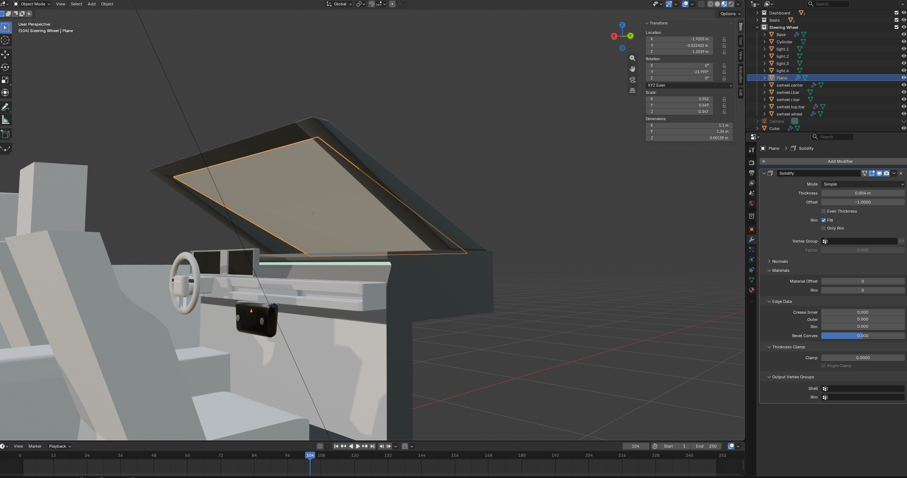
The windshield plane selected, with Solidify set to 4 mm.
Windshield glass material test
In progress. The glass material is on the windshield. In Material Preview, the glass is see-through and shows the HDRI background (blurred greenery) behind the dashboard. When I switch to the rendered viewport shading, the whole scene turns pink. See Open Questions for the likely cause and fix.
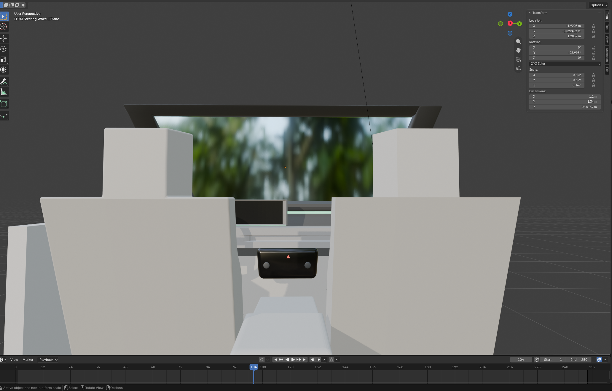
Material Preview: the glass transmits the HDRI background.
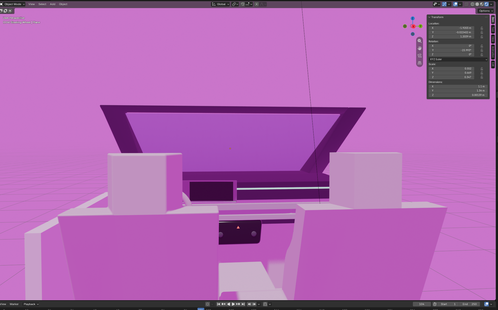
Rendered viewport shading: the whole scene, background included, turns pink.
HDRI background and dark glass
In progress. The World now uses an HDRI (rathaus_4k.exr: Environment Texture, equirectangular, strength 1.0), and the pink is gone. The new problem is that the windshield looks too dark and greenish. The areas outside the glass, past the pillars, show the HDRI much brighter.
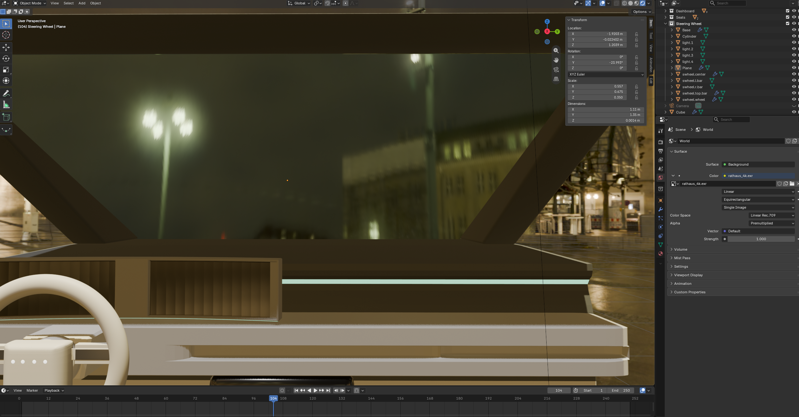
Rendered viewport with the HDRI in the World. The glass area is noticeably darker than the unglazed edges.
Glass shows the sky instead of the scene behind it
In progress. I switched the World to a new HDRI (cedar_bridge_2_4k.exr, strength 1.0). Found the real problem: the glass is not behaving as transparent. Through the windshield I see clouds, but beyond the pillars I see the bridge and the area behind it. The glass seems to be reflecting or bending the HDRI rather than showing what is actually behind it.
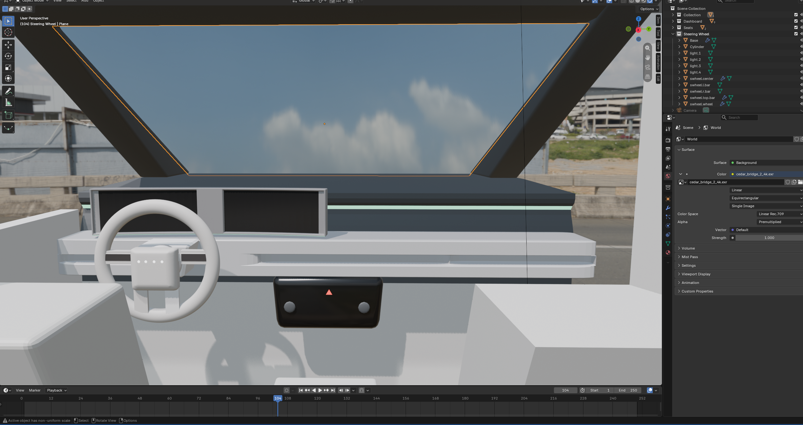
The windshield shows sky and clouds; the gaps beyond the pillars show the bridge.
Dashboard colors and rear view mirror
In progress. Went through reference images to pick the dashboard colors.
Color direction
Edge around the window: tan.
Dashboard below the screen: a darker gray.
Rear view mirror
Modeling both the mirror base (the mount) and the mirror itself. Next, I’ll apply the mirror material settings from Open Questions below and push it toward more reflective: Metallic at 1 with very low roughness.
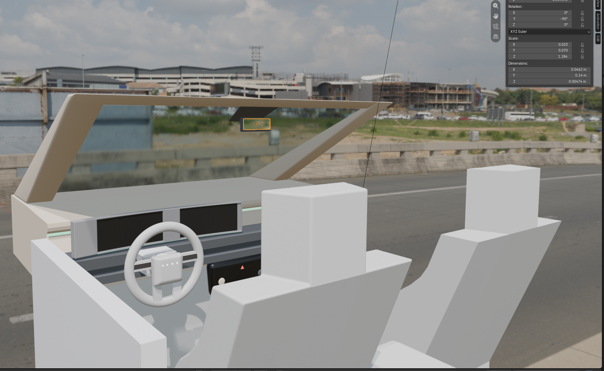
Progress so far: the windshield is now clear, with tan trim, a gray dashboard, and the rear view mirror (selected) at the top of the glass.
Created a glass.mirror material on the mirror.rearview.glass object (Metallic 1, Roughness 0). Still need to assign it to the mirror faces and turn Transmission off.
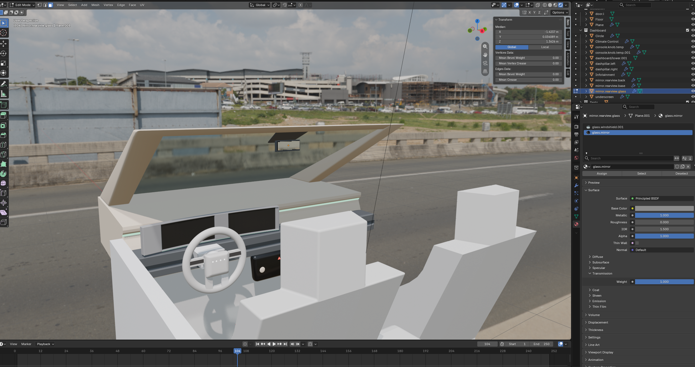
Edit Mode on the mirror glass object with the glass.mirror material and its Principled BSDF settings.
Testing the mirror: I placed a red square behind the car to see whether it shows up in the rear view mirror. It does not appear yet.
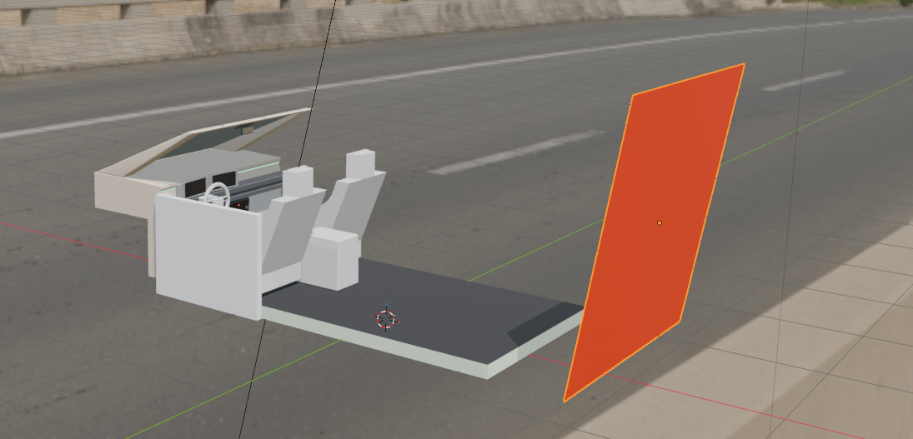
The red test square placed behind the car.
Result: the mirror reflects
Working. The red square now shows up in the rear view mirror. The setup that made it work: EEVEE with Raytracing turned on in the Render tab, plus a Sphere Light Probe placed right at the mirror. The mirror stays a Principled BSDF with Metallic 1 and Roughness 0.
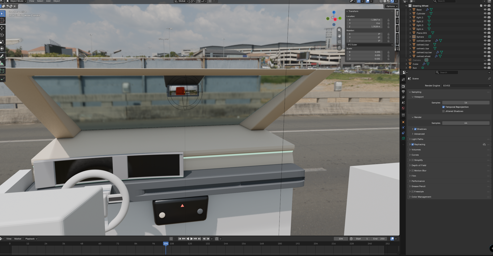
The red square reflected in the rear view mirror. The Sphere Light Probe is the circle around the mirror, and Raytracing is ticked in the Render tab.
Mirror tweaks, night HDRI test and the remaining build list
In progress. Making small adjustments to the rear view mirror. I switched the World back to the dark, rainy street HDRI (rathaus_4k.exr) to see how the mirror holds up in gloomy lighting. The light probe is now named mirror.rearview.reflectionSphere.
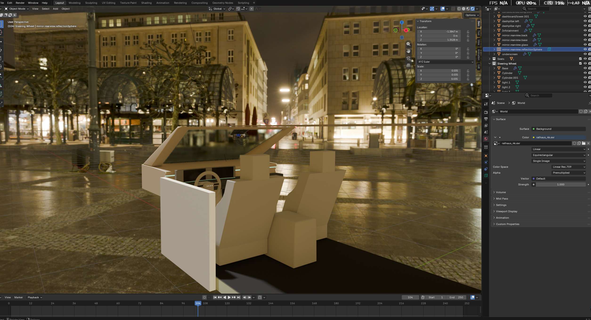
Night test with the rainy HDRI. The reflection sphere sits at the mirror.
Remaining pieces to add
These should be the last new pieces:
Roof: adding it now.
Doors: adjust them next.
Front pillar: build the front pillar of the door to close the gap that shows when looking around, so the peripheral view stays believable.
After that
Fine-tune details such as the screen and the console.
Add an interior light. The roof will make the cabin darker.
Reference color palette
Reference. Colors sampled from an Ioniq 5 interior reference photo, to use as Base Colors for the dashboard, trim, seats and lights.
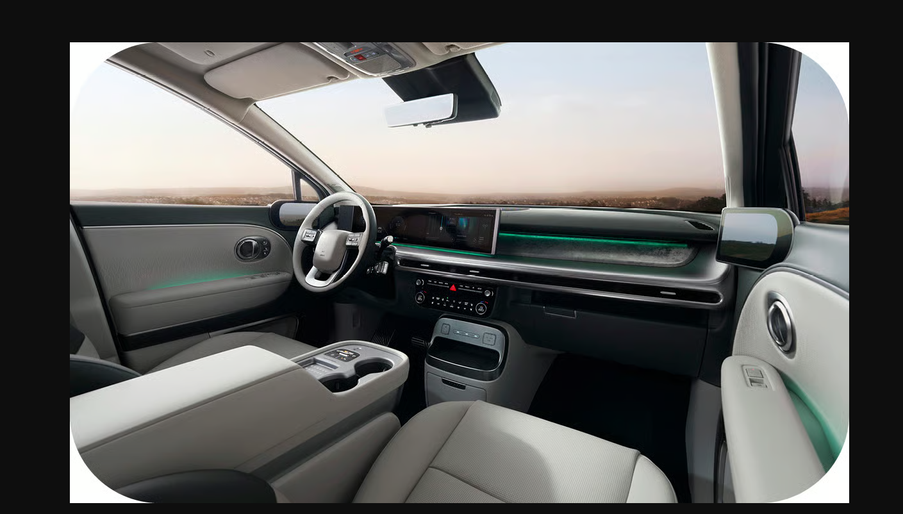
Reference photo the palette was sampled from.
#C5C7C0Seat and console leather
#B4B1ACDoor pad and armrest
#A39890Headliner and window trim (the tan)
#323837Dashboard top
#4B4E4EDashboard pad under the screen
#101317Lower dashboard and shadows
#CBCBC8Steering wheel, light parts
#1D1F21Steering wheel, dark parts
#222326Rear view mirror housing
#010508Floor
#0BA57AAmbient light strip on the dash
#4D8772Ambient glow on the doors
These were measured from a photo, so lighting and shadows shift them a little. Treat them as starting points. In Blender, click a Base Color swatch, open the Hex tab in the color picker, and paste the code. For the light strip, use the green as the Emission color.
Arms added and first full render
In progress. Appended the rigged arms from my other file and posed the hands on the steering wheel. Switched the World to a desert road HDRI and rendered the driver's view.
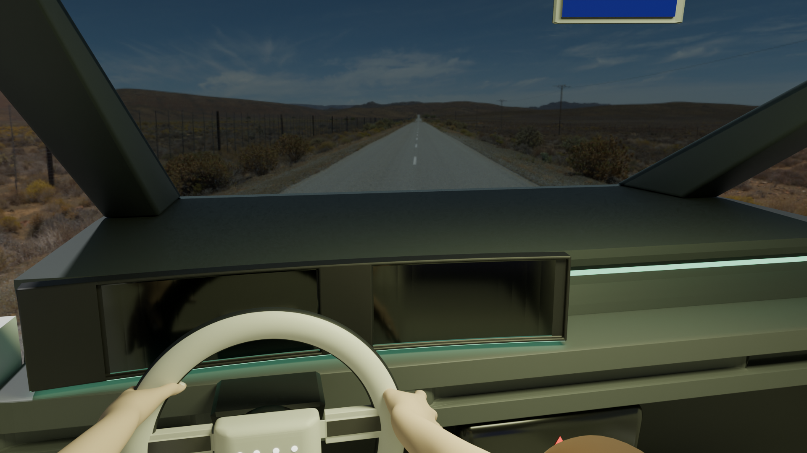
First render with the arms in place. The rear view mirror (top right) shows flat blue.
Issues spotted
Rear view mirror: shows a flat blue instead of the road behind. It is most likely reflecting the sky above the car. See Open Questions.
Bottom right: part of the rig's head pokes into the camera. Move the camera slightly forward, or hide the head from the camera (Object Properties > Visibility).
Left edge: the flat end of the door panel shows. The front pillar on the build list will close this gap.
Infotainment screen image
In progress. Adding a placeholder UI image to the infotainment screen, to preview how the screen will look before I bring in my Figma prototype. The goal is to keep the glossy black screen look from the render above, with the image glowing underneath. Setup steps are in Open Questions.
First try: the image is on the screen and the gloss holds up, but it came in rotated 90 degrees, so the text runs vertically.
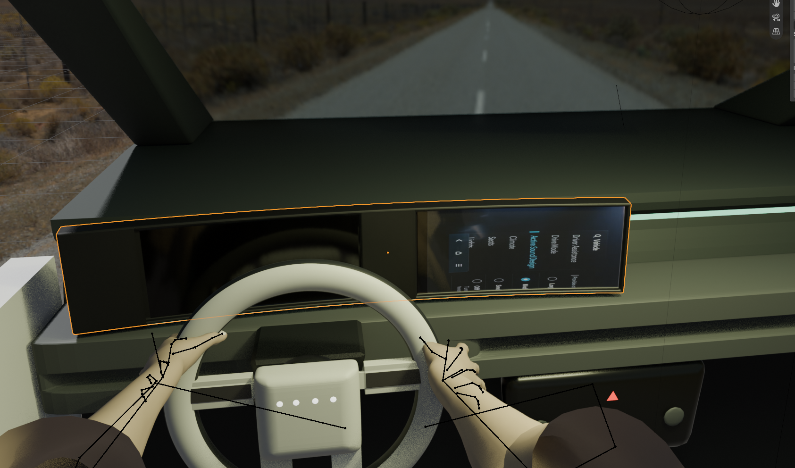
The UI image on the infotainment screen, rotated 90 degrees. Fix in Open Questions.
Both screens filled, camera set up for animation
In progress. Both screens now show UI images the right way up: the driver cluster on the left with the speed and power gauges, and the infotainment menu on the right. The camera is set up at the driver's eye for the first animation pass.
Camera: location (-0.46, -0.76, 1.27) m, rotation (73°, 0°, -12.6°), 26 mm focal length, clip start 0.1 m.
Rig: the arms (basicRig) sit on the wheel. From this angle the cut-off ends of the upper arms show near the bottom of the frame, so keep them outside the camera view or hide them.
Mirror: still shows blue, so it still needs the angle fix from Open Questions.
Next: keyframe a basic animation, starting with the camera looking around and the hands on the wheel. Steps are in Open Questions.
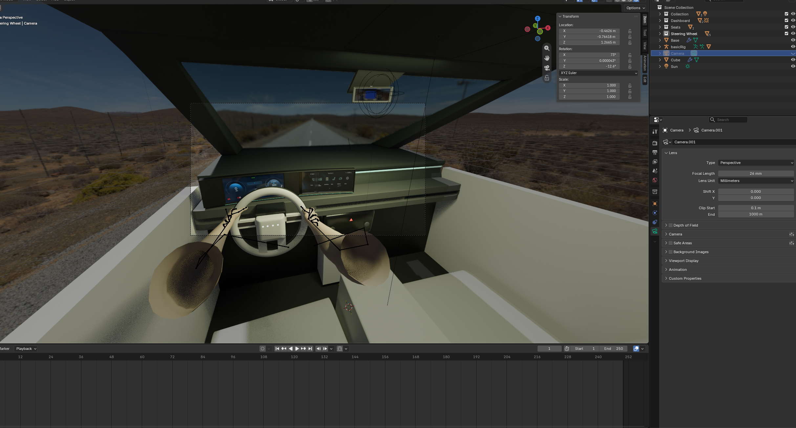
Both screens showing UI images, with the camera selected and its frame (dashed box) around the dashboard.
Roof light, night scene and a Cycles test
In progress. Added a roof light (light.roof.front) and keyframed it turning on. Switched to a dusk HDRI and tried a render in Cycles (CPU, Denoise on for the final render). The screens, ambient strip and hands look good. The rear view mirror looks very different from EEVEE: the red test square fills most of it, and part of it is blown out to white.
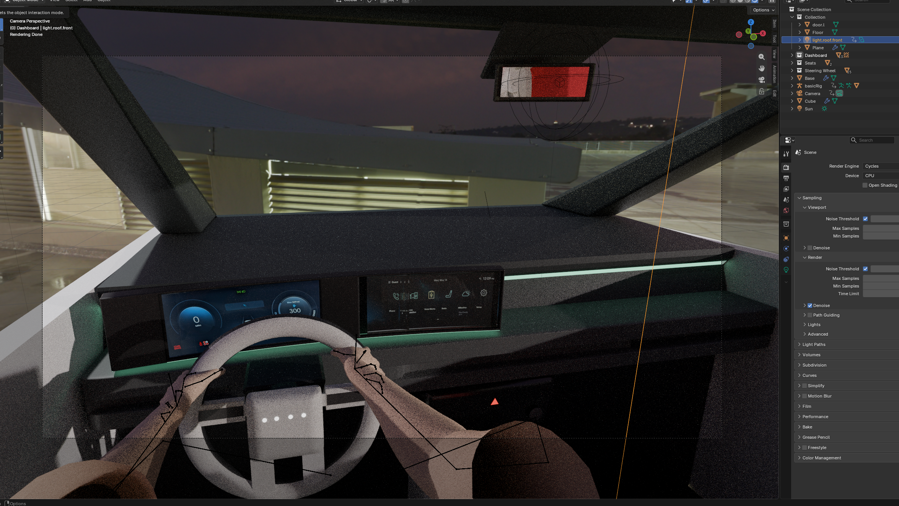
Cycles render: the mirror is filled by the red test square, with a blown-out white area on the left.
Open Questions
How do I make the windshield glass, and keep reflections low?
Geometry. Skip the cube. Use a single curved surface shaped to the windshield (a subdivided plane works), and add a Solidify modifier for about 4 to 5 mm of thickness if the edge will ever be visible from the cabin.
Material. In the Principled BSDF, set Transmission to 1, Roughness near 0 to 0.05, and IOR around 1.45. A tint is optional; a very slight blue or green looks like real automotive glass.
Cutting reflections.
Lower the Specular (IOR Level) value, and as a cheat, lower the IOR toward 1.05 to 1.1. Both reduce how much the glass reflects.
Keep the interior lighting dim and the world/HDRI strength modest. The glass can only reflect what is lit.
In Cycles, turn off the glass object's Shadow ray visibility so it does not block sunlight.
In Eevee, check the material's render method (blended or dithered) and enable screen space refraction or raytracing, depending on your Blender version, so the transmission shows.
How do I set up the material on the windshield plane?
With the plane selected, open the Material tab in the Properties panel (the red sphere icon at the bottom of the tab column) and click New. Name it something like "Windshield Glass".
In the Principled BSDF, set Transmission to 1, Roughness to 0 to 0.05, and IOR to about 1.45. Keep Base Color near white, or add a faint blue-green tint.
Lower Specular (IOR Level) from 0.5 to around 0.2 to cut reflections.
In Eevee, open the material's Settings and use a blended render method (Blend Mode set to Alpha Blend in older versions) so the glass shows properly.
Simpler option for recording: skip Transmission and set Alpha to about 0.1 to 0.2. The glass stays see-through, reflects very little, and renders faster.
Why does everything turn pink in the rendered viewport, and how do I remove it?
Most likely cause: the World. Pink or magenta is Blender's color for a missing texture, and the background is pink too, so the World shader is probably pointing at an environment image that can't be found. Rendered shading uses the World, while Material Preview uses its own built-in HDRI, which is why only Rendered turns pink.
Open the Properties panel and click the World tab (the red globe icon).
Under Surface, check the Color. If it is an Environment Texture with a missing image, or a pink swatch, click it and switch it to Color.
Set the color to a neutral dark gray. A dim world also helps keep reflections on the glass low.
If the tab only shows a New button, click it to create a world, then set the color the same way.
The HDRI works, but the windshield is too dark. How do I brighten it?
Most likely cause: the glass material itself. Transmission is multiplied by the Base Color, so a gray or green base color darkens everything seen through the glass. The unglazed edges of the view look brighter, which points to the glass rather than the HDRI.
Open the Material tab and set Base Color to pure white, or a very light tint.
Keep Transmission at 1 and Roughness at 0 to 0.05.
If it is still dark in Eevee, try toggling the refraction or raytracing setting in the Render tab.
If the HDRI is just a dim night scene, raise the World Strength to about 2, or raise Exposure under Color Management by about 1. Keep the glass Specular (IOR Level) low so a brighter world doesn't add reflections.
Alternative: set Transmission to 0 and Alpha to about 0.1 to 0.2. The glass stays clear and does not darken the view.
Why does the glass show clouds instead of the scene behind it, and how do I make it truly transparent?
Most likely cause: in Eevee, Transmission with an IOR of about 1.45 on a single thin surface bends the view heavily, so the glass shows a different part of the HDRI (higher sky) than what is really behind it. Surface reflection (Fresnel) on a steeply raked windshield adds to the effect. Real glass bends light twice, in and out, so the two cancel out. A single surface only bends it once.
Set IOR to 1.0 in the Principled BSDF. That removes both the bending and the Fresnel reflection, so the glass looks clear.
If you are on a newer Eevee, open Material Settings and set Thickness to Slab so thin glass does not bend the view.
Use a white or very light Base Color. A blue tint adds to the sky-blue look.
Simplest option: set Transmission to 0 and Alpha to about 0.1 to 0.2.
Principled BSDF? Can you explain what it stands for and where to go? I’m only seeing IOR on the material.
What BSDF means
BSDF stands for Bidirectional Scattering Distribution Function. In Blender, a BSDF is a shader that tells the renderer how light interacts with a surface: how it bounces off (reflection) or passes through (transmission). That is why Blender has nodes named Diffuse BSDF, Glossy BSDF, Glass BSDF, Transparent BSDF and Principled BSDF.
The Principled BSDF is the all-in-one version: one shader with sliders that can make metal, plastic, glass, glowing surfaces and more.
Where to find it
Select the object, then open the Properties panel and click the Material tab (the sphere icon at the bottom of the tab column).
In the Surface panel, the Surface field shows which shader is used. If it says Principled BSDF, its settings are listed below.
Base Color, Metallic, Roughness, IOR and Alpha are visible by default. Specular (IOR Level) and Transmission (Weight) are inside collapsed sections; click the small arrow next to each name to expand it.
If the Surface field says Glass BSDF instead, it only has Color, Roughness and IOR. That is a simpler glass shader with no Transmission or Specular sections. Set IOR to 1.0 and Color to white there.
When to use which shader
Principled BSDF: the default for almost everything. Use it when you want full control, such as the dashboard plastics, steering wheel and the screen frames.
Glass BSDF: a quick, simple glass with only Color, Roughness and IOR. Good for plain windows when you don’t need extra controls.
Transparent BSDF: fully see-through, with no bending and no reflection. A strong option for a windshield that should look completely clear while recording.
Emission: for things that glow, like the light strip across the dashboard and the screens.
What does IOR mean?
IOR stands for Index of Refraction. It is a number that says how much light bends when it passes from one material into another, and how reflective the surface is at glancing angles.
Common values
Air: 1.0 (no bending)
Water: about 1.33
Window glass: about 1.45 to 1.52
Diamond: about 2.42
Why it matters here
A higher IOR means more bending and more reflection. On the windshield, a single surface with an IOR of about 1.45 bends the view and reflects the sky, so it showed clouds instead of the scene behind it. Setting IOR to 1.0 removes both effects and makes the glass look clear.
When to change it
Use realistic values (about 1.5) for glass you want to see bending light, such as a bottle or a thick lens. Use 1.0 for thin, flat panes like a windshield when you want them to look transparent.
What about for a mirror? What settings do I use for the rear view mirror?
Give the mirror surface its own material, separate from the plastic housing around it (a separate face or object with its own material slot).
Option 1: Principled BSDF
Metallic: 1
Roughness: 0 to 0.03. A tiny bit of roughness hides imperfections.
Base Color: light gray, about 0.8 to 0.9, rather than pure white. Real mirrors are never perfect.
IOR does not matter for a fully metallic surface.
Option 2: Glossy BSDF
The simpler choice. Set Color to white or light gray and Roughness to 0. Use it when you only need a mirror and nothing else.
Seeing reflections
In Cycles, mirror reflections work automatically. In Eevee, a mirror may only reflect the HDRI unless you turn on raytracing (newer versions) or Screen Space Reflections (older versions) in the Render tab. For a small rear view mirror, reflecting the HDRI is usually convincing enough.
Why can’t I find the Apply button for the materials on my mirror?
There is no Apply button for materials. A material takes effect as soon as it is linked to the object. The only button named like that is Assign, and it only shows up in Edit Mode.
If the mirror is its own object
Click the mirror to select it.
Open the Properties panel and click the Material tab (the sphere icon at the bottom of the tab column). It only appears when a mesh object is selected.
Click New to create a material, or use the sphere dropdown next to it to pick one you already made.
Set Metallic to 1, Roughness to 0, and Base Color to light gray.
If the mirror is part of a bigger object
Press Tab to enter Edit Mode and select only the mirror faces.
In the Material tab, pick a slot (or click + to add one) and create the material.
Click Assign. It is under the slot list and only appears in Edit Mode.
Tip: the mirror has a non-uniform scale (0.023, 0.070, 1.184). Pressing Ctrl+A in Object Mode and choosing Scale applies it, which keeps shading and modifiers behaving evenly.
I’m in Edit Mode on the mirror with a glass.mirror material. What do I do now?
The object has two material slots, glass.windshield.001 and glass.mirror. The mirror faces may still be using the windshield slot, so they stay see-through until they are assigned to the mirror slot.
In Edit Mode, make sure the mirror faces are selected (face select mode).
In the slot list, click glass.mirror so it is highlighted.
Click Assign, just below the slot list.
In the Principled BSDF, open the Transmission section and set Weight to 0. Transmission was left at 1 from the glass material and conflicts with Metallic 1.
Press Tab to go back to Object Mode and check the result in Material Preview or Rendered view.
Metallic 1 and Roughness 0 already match the mirror settings above. If the mirror looks too dark, raise Base Color toward light gray (about 0.8 to 0.9).
Checking what is assigned
With a slot highlighted, Select highlights every face using it, and Deselect removes them from the selection. Use these to see which faces belong to each material.
I put a red square behind the car to test the rear view mirror, but I can’t see it in the mirror. Why?
Most likely cause: in Eevee, mirrors mainly reflect the HDRI and whatever is visible on screen. The red square is behind the viewer, off screen, so Eevee has nothing to reflect unless you give it more information.
Switch the viewport to Rendered view, then open the Render tab and turn on Raytracing (newer Eevee) or Screen Space Reflections (older Eevee).
Add a Sphere Light Probe near the mirror (Add > Light Probe > Sphere) and bake it if it asks, so Eevee can capture objects behind the car.
Or switch the Render Engine to Cycles. Mirror reflections are accurate by default, including objects off screen, but it renders slower.
Also check the layout
View from the driver’s seat, looking at the mirror. From outside the car you will not see the reflection.
The red square needs to sit along the reflection line: behind the driver, roughly at head height, and large enough to fill the mirror.
Rotate the mirror a little until the reflection points back at the square.
Result
It worked. With Raytracing on and a Sphere Light Probe at the mirror, the red square shows up in the rear view mirror. See the mirror entry above for the screenshot.
What kind of light should I use for the interior roof light: point, spot or area?
Use an Area light. It spreads soft, even light, like a real dome light, and it looks good in Eevee.
Why not the others
Point: a tiny source that makes bright hotspots on the roof lining and trim close to it.
Spot: a cone with a defined edge. Better for a reading light aimed at one spot, such as the driver’s lap.
Sun: meant for outdoor daylight, not interiors.
Setup
Add > Light > Area.
Place it just under the roof, near the center, facing down (the default direction).
In the Light properties (Object Data tab), set the Shape to Rectangle or Square, about 0.25 to 0.4 m in size.
Start the Power around 10 to 20 W and adjust by eye. Use a slightly warm white for the color.
Keep it low enough that it does not wash out the reflections in the rear view mirror.
I have rigged arms in another file. How do I add them without opening a whole new file?
Use File > Append. It copies objects from another .blend file into the one you are working in.
Save your current file first (Ctrl+S).
Go to File > Append and browse to the .blend file that has the arms.
Double-click the file to look inside it. If the arms are in a collection, open the Collection folder and select that collection. Otherwise open the Object folder and select both the armature and the arm mesh.
Click Append. The rig comes in with its bones, vertex groups and modifiers intact.
Move the arms into position with G, and keep them in their own collection so they are easy to hide or isolate.
Append vs Link
Append makes a full copy you can pose and edit. Link keeps a live reference to the original file, but you cannot pose a linked rig until you make a Library Override. Append is the simpler choice here.
Quick alternative
Open the arms file in a second Blender window, select the armature and mesh, and press Ctrl+C. Then press Ctrl+V in the viewport of this file. Append is more reliable for rigs.
I rendered it and the rear view mirror doesn’t seem to work. It just shows blue. Why?
Most likely cause: the mirror is working, but it is aimed at the sky. The flat, saturated blue with no horizon matches the desert HDRI's sky straight overhead. The camera sits lower than the mirror and off to the driver's side, and the mirror faces straight back. So from the driver's eye it bounces the view up and over the car. With no roof, rear window or back seats yet, there is nothing behind the car to see except sky.
Fix the angle
Look through the camera (Numpad 0) in Rendered view, so you see what the render sees.
Select mirror.rearview.glass, plus the back and base if they are separate, so they move together.
Press R then Z and turn it about 10 to 20 degrees toward the driver.
Press R and the axis that tips it forward, and tilt it down a few degrees.
Watch the mirror while you rotate. The blue should give way to the horizon, then the road behind.
If it still looks flat
Move mirror.rearview.reflectionSphere back to the mirror. Reflections come from the probe's position, and it does not follow the mirror.
Check that Raytracing is still ticked in the Render tab.
Render one frame in Cycles. If Cycles shows the road, the problem is the EEVEE probe setup. If Cycles also shows blue, the mirror needs more angle.
Put the red test square back behind the car at head height as a target to aim at.
Once the roof and rear window exist, the mirror will pick up the headliner and rear glass, which reads much more like a real mirror.
How do I put an image on the infotainment screen? (simple steps)
Do one screen at a time.
1. Get the picture ready
In Figma, make a frame that is wide and short, matching the screen's shape. The Ioniq 5 screens are about 8:3, for example 1920 × 720 px. To check the exact shape, select the screen in Blender, press N, and compare its width and height.
Put the design in the frame and export it as a PNG (2x).
2. Pick the screen
Click the Infotainment object and press Tab for Edit Mode.
Press 3 on the top row for face select, and click only the flat screen face.
3. Give the screen its own material
Open the Material tab (the red ball icon).
Click + to add a slot, click New, and name it screen.infotainment.
Click Assign.
4. Make the picture fit
With the face still selected, press U and choose Unwrap.
Press Tab to go back to Object Mode.
5. Put the picture on
Open the Shading workspace and move the mouse into the node area.
Press Shift + A > Texture > Image Texture and click to place it.
Click Open and pick the PNG.
Drag from the yellow Color dot to Emission Color on the Principled BSDF. Expand the Emission section if it is hidden.
6. Keep it glossy
Base Color: black
Roughness: 0.05
Emission Strength: 1
Optional: Coat Weight 1 for an extra glass layer.
7. Check it
Switch to Rendered view. If the picture is sideways, upside down or stretched, fix it in the UV Editing workspace (see the rotation question below). If it is too bright and the shine is gone, lower Emission Strength. Repeat for the left screen with a material named screen.cluster.
Later: record the Figma prototype as an MP4, open it in the same Image Texture node, set it to Movie and turn on Auto Refresh. The screen will play the prototype in the render.
I want to keep the glossy screen look from my render. Does the image ruin that?
No. Emission adds light on top of the surface, so reflections stay as long as the material stays glossy.
Base Color: black.
Roughness: 0.02 to 0.08. This is what gives the gloss.
Specular (IOR Level): leave at 0.5. Lowering it weakens reflections.
Emission Color: the Figma image.
Emission Strength: 0.8 to 1.5. Higher values drown out the reflections.
Coat (optional): Weight 1, Roughness 0, for a cover-glass look with crisper reflections.
Dark areas of the UI show the most reflection and bright areas the least, just like real car screens. A dark-mode design will look the most convincing.
The image came in sideways on the screen. How do I rotate it?
Rotate the UVs, not the object. The UVs decide which way the image sits on the face.
Select the Infotainment object and open the UV Editing workspace at the top.
On the right (3D view), press Tab for Edit Mode and select the screen face.
Move the mouse over the left panel (UV Editor) and press A to select the whole UV island.
Type R, then 90, then press Enter.
Check the 3D view. If it is still sideways or now upside down, press R180Enter (or use -90 instead).
If the text reads backwards, flip it: SX-1Enter.
Once it reads correctly, stretch it to fill the image: press SX or SY and drag until the island covers the whole image square. Or right-click > Unwrap again after rotating, then scale to fit.
Press Tab to return to Object Mode and check in Rendered view.
How do I start recording keyframes and basic animations again?
A keyframe saves an object's position, rotation or scale at one frame. Blender fills in the motion between two keyframes.
1. Set up the timeline
Open the Output tab (the printer icon) and set the Frame Rate, such as 24 or 30 fps.
In the Timeline at the bottom, set Start and End. At 24 fps, 240 frames is 10 seconds.
2. Keyframe an object (for example, the camera looking around)
Go to frame 1 and select the Camera.
Hover over the viewport and press I. This saves location and rotation. A yellow diamond appears in the timeline. (Or right-click a single value in the N panel, such as Rotation Z, and choose Insert Keyframe.)
Move to a later frame, such as 60. Rotate the camera: RZ25Enter to look left.
Press I again.
Repeat. For example, look back to center at frame 120, then right at frame 180.
Press Space to play, and press it again to stop.
3. Keyframe the arms (pose the rig)
Select basicRig and press Ctrl + Tab for Pose Mode.
Click a bone, such as a hand or forearm, and pose it with R or G.
Press I to key the selected bones. Press A first to key every bone.
Change the frame, pose again, and press I. For example, turn the wheel by rotating the hands along with swheel.wheel, and key both.
4. Record mode (auto-keying)
Click the round record button in the Timeline header. While it is on, every move or rotation you make is keyed automatically at the current frame. Remember to turn it off afterwards, or stray edits get keyed too.
5. Editing keyframes
In the Timeline or Dope Sheet, click a diamond and press G to slide it in time, X to delete it, or Shift + D to copy it.
Alt + I over the viewport removes the keyframe on the current frame.
Blender eases in and out between keys by default. For a steady camera pan, select the keys, press T, and choose Linear. For finer control, use the Graph Editor.
6. Render the animation
In the Output tab, set the output folder, and set File Format to FFmpeg Video with the MPEG-4 container.
Press Ctrl + F12 (Render > Render Animation).
Troubleshooting: no diamond appears
If pressing I shows an “Insert Keyframes: All Channels” panel and no diamond, the mouse was over the Timeline, not the 3D viewport. In the Timeline, I only adds keys to channels that are already animated, so on a fresh object it does nothing. Move the mouse over the 3D viewport, make sure the object is selected (highlighted orange), and press I there. Also note that the Timeline only shows diamonds for selected objects.
Tip for the first-person look: keep the camera's Location fixed and only key Rotation Z (left/right) and a little Rotation X (up/down). Small, slow turns, about 20 to 40 degrees over 1 to 2 seconds, feel like a real head turning.
How do I animate a light turning on? I thought I could just change the Power between keyframes.
You can. The catch is that Power has to be keyed directly. Pressing I in the viewport only keys location, rotation and scale, not the light's power.
Select the light and open the Object Data tab (the green light bulb icon).
Go to the frame where the light should still be off, and set Power to 0 W.
Hover the mouse over the Power field and press I, or right-click it and choose Insert Keyframe. The field turns yellow.
Go to the frame where the light should be on, and set Power to its full value, such as 15 W. The field turns orange, which means the value changed but is not saved yet.
Hover over Power and press I again. It turns yellow.
Scrub the timeline. Between the keys, the field shows green, meaning it is animated.
Field colors
Yellow: keyed on this frame.
Green: animated, but no key on this frame.
Orange: changed but not keyed. Press I or the change is lost when you move frames.
Snap on instead of fading
By default, Blender fades smoothly between the two keys. To make the light snap on like a real dome light, place the two keys one frame apart. Or select both keys in the Timeline, press T, and choose Constant.
Glowing materials
The same steps work for the screens and the ambient light strip. Key Emission Strength on their materials, from 0 to the normal value, for example to make the screens boot up after the dome light turns on.
Follow-up: it still fades on slowly
With the light selected, hover over the Timeline, press A to select all its keys, then press T and choose Constant. If the keys don’t show in the Timeline, switch the bottom editor to the Dope Sheet, where they are listed under the light, and do the same there.
Why is the mirror blown out and zoomed in when I render in Cycles, compared to EEVEE?
Cycles traces the real reflection off the mirror's surface. EEVEE fakes it with the sphere probe, which captures the scene from one point and makes nearby things look smaller and farther away. So Cycles is closer to the truth, and three things in the scene make it look wrong.
1. The red test square is right behind the car
Because it is so close, it fills most of the mirror in a true reflection. Hide it from renders: click the camera icon next to it in the Outliner, or delete it now that the test is done.
2. Smooth shading can bend the reflection
A mirror with Shade Smooth on a few faces, or with unapplied non-uniform scale, acts like a curved fun-house mirror and magnifies the image.
Select mirror.rearview.glass, right-click in the viewport, and choose Shade Flat.
Press Ctrl + A and choose Scale to apply the (0.023, 0.070, 1.184) scale.
3. The white patch is probably the roof light
In Cycles, an Area light shows up in reflections as a bright rectangle, and light.roof.front sits right next to the mirror.
Select the light and open Object Properties > Visibility > Ray Visibility. Untick Glossy so the mirror no longer sees the light itself, while the light still lights the cabin.
Set the mirror's Base Color to light gray (about 0.8) rather than pure white, so it does not reflect at full strength.
Grain in the viewport
Rendered view in Cycles looks speckled because viewport Denoise is off. Tick Denoise under Sampling > Viewport to preview more cleanly. The final render already has it on.